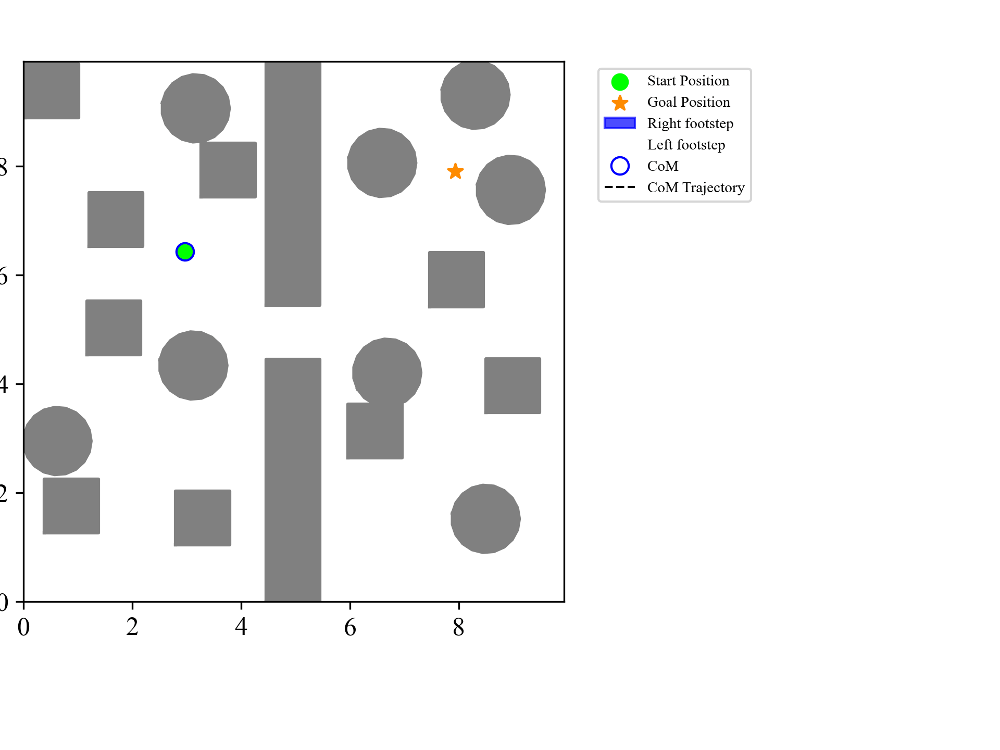
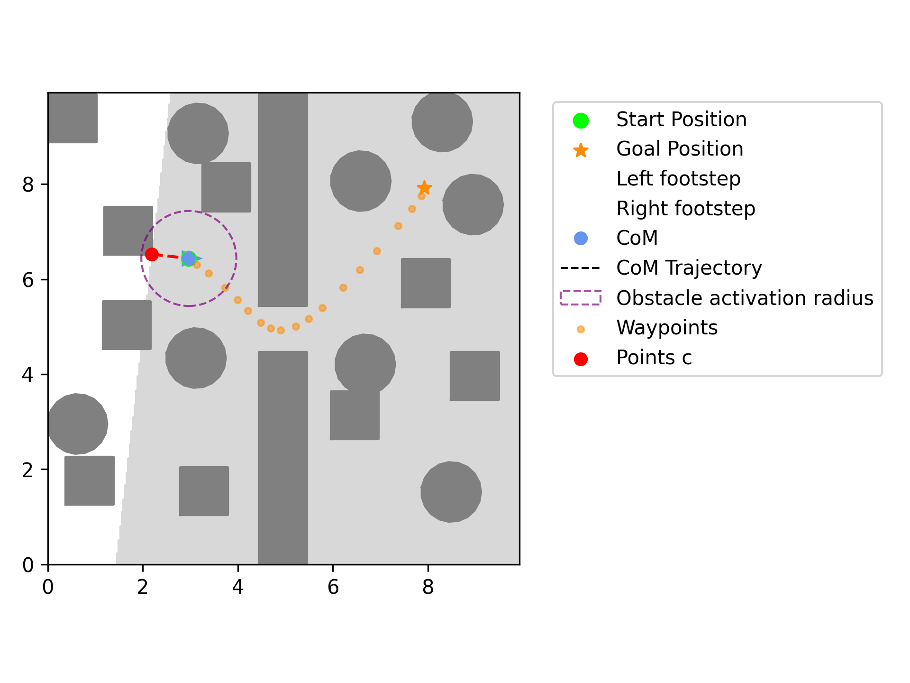
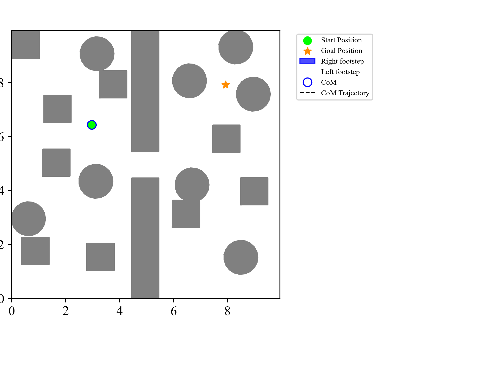

Combining Diffusion-based Trajectory Generation with Model Predictive Safety Control for Mobile Robot Navigation and Control
Abstract
Safe and effective trajectory planning and control is one of the key issues for the practical deployment of mobile robots in various real-world environments. To better balance searchability and safety, this paper proposes a novel hybrid planning scheme. The scheme combines diffusion trajectory generation (DTG) and model predictive safety control (MPSC) to achieve efficient and reliable trajectory planning for mobile robots in cluttered environments. Our proposed DTG-MPSC framework consists of three main modules. First, a task-oriented DTG is designed to fully sample the posterior robot trajectory distribution. Second, an activatable safety obstacle function is constructed. Third, static and dynamic obstacles are avoided using MPSC. The proposed method is applied to trajectory planning of a linear inverted pendulum (LIP) based legged robot and a differential drive wheeled mobile robot. Comparison with other methods verifies the effectiveness, success rate and safety of the proposed method.
Simulation Video
Scene 1: Comparison of different methods in simulation.




Physical Experiment Video
Scene 3: Comparison of different methods in physical experiments.
BibTeX
@article{dtgmpsc2025,
title = {Combining Diffusion-based Trajectory Generation with Model Predictive Safety Control for Mobile Robot Navigation and Control},
author = {First Author and Second Author and Third Author},
journal = {Conference Name and Year},
year = {2025}
}